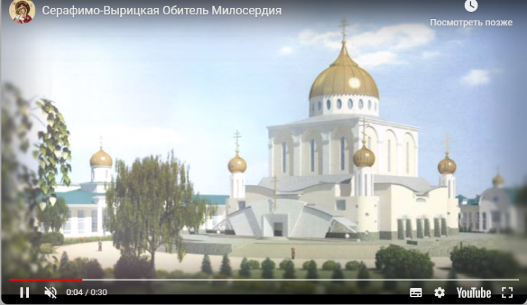

.png)
Наши проекты
Православная гимназия
Медико-реабилитационный центр
Центр поддержки материнства
Новости
Пасхальное послание митрополита Омского и Таврического Владимира
Воскресение Христово видевше, поклонимся Святому Господу Иисусу! Ныне мы с вами, подобно первым ученикам Христовым, видим Его Живоносное Воскресение! Отвален камень, заслонявший гробницу; разбежались в страхе сторожившие ее воины; лежат свернутыми погребальные пелены, и нет Того, Кого погребали в них. Мы удостоились вместе с апостолами пройти весь скорбный путь Страстной седмицы, пребывая, как и они, в единодушной молитве;
мы были свидетелями зависти человеческой к Сыну Божию, предательства сребролюбца Иуды, Страстей Христовых, страшного Его Распятия. К этому тяжелому для христиан переживанию Церковь подготовила нас сорокадневным поприщем Великого поста, исполненным молитвой и покаянием….
Пасхальное послание митрополита Омского и Таврического Владимира
Воскресение Христово видевше, поклонимся Святому Господу Иисусу! Ныне мы с вами, подобно первым ученикам Христовым, видим Его Живоносное Воскресение! Отвален камень, заслонявший гробницу; разбежались в страхе сторожившие ее воины; лежат свернутыми погребальные пелены, и нет Того, Кого погребали в них. Мы удостоились вместе с апостолами пройти весь скорбный путь Страстной седмицы, пребывая, как и они, в единодушной молитве; мы были свидетелями зависти человеческой к Сыну Божию, предательства сребролюбца Иуды, Страстей Христовых, страшного Его Распятия. К этому тяжелому для христиан переживанию Церковь подготовила нас сорокадневным поприщем Великого поста, исполненным молитвой и покаянием….
Пасхальное послание митрополита Омского и Таврического Владимира
Воскресение Христово видевше, поклонимся Святому Господу Иисусу! Ныне мы с вами, подобно первым ученикам Христовым, видим Его Живоносное Воскресение! Отвален камень, заслонявший гробницу; разбежались в страхе сторожившие ее воины; лежат свернутыми погребальные пелены, и нет Того, Кого погребали в них. Мы удостоились вместе с апостолами пройти весь скорбный путь Страстной седмицы, пребывая, как и они, в единодушной молитве; мы были свидетелями зависти человеческой к Сыну Божию, предательства сребролюбца Иуды, Страстей Христовых, страшного Его Распятия. К этому тяжелому для христиан переживанию Церковь подготовила нас сорокадневным поприщем Великого поста, исполненным молитвой и покаянием….


Наша Обитель

«Серафимо-Вырицкая Обитель Милосердия» – это уникальный, социальный комплекс, эффективно способствующий улучшению демографической ситуации в Сибирском регионе. Обитель будет построена в загородном поселке Пушкино, Омского района, Омской Области.
Благотворители